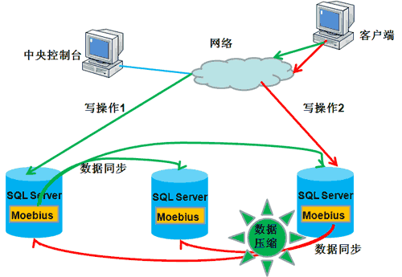
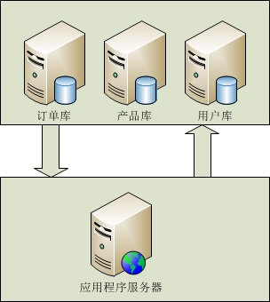

With the widespread adoption of Internet applications, the storage and access of massive data has become a bottleneck in system design. For a large-scale Internet application, millions or even hundreds of millions of PV per day undoubtedly place a considerable load on the database, causing great problems for system stability and scalability.
I.Load BalancingTechnology
A load-balancing cluster consists of a group of independent computer systems connected via a conventional or dedicated network, linked together by routers. The nodes cooperate with each other, share the load, and balance pressure. To the client, the entire cluster can be regarded as a single independent server with ultra-high performance.
1. Implementation Principle
To implement database load balancing technology, you first need a controller that can control connections to the database. Here, it severs the direct connection between the database and the application; all programs access this middle layer, and the middle layer then accesses the database. In this way, we can specifically control which database is accessed, and also adopt effective balancing strategies based on the database's current load to adjust which database each connection goes to.
2. Implementing Multi-Database Data Synchronization
For load balancing, the most important thing is that data on all servers is synchronized in real time. This is necessary for a cluster because if data is not real-time or not synchronized, the data a user reads from one server will differ from data read from another server, which is unacceptable. Therefore, database data synchronization must be implemented. In this way, multiple resources are available during queries, achieving balance. A commonly used method is the Moebius for SQL Server cluster. The Moebius for SQL Server cluster adopts an approach in which a core program resides in the database on each machine. This core program, called the Moebius for SQL Server middleware, mainly monitors changes in database data and synchronizes the changed data to other databases. The client receives a response only after data synchronization is completed. The synchronization process is performed concurrently, so the time to synchronize to multiple databases is basically the same as synchronizing to one database. In addition, synchronization is completed in a transaction environment, ensuring the consistency of multiple copies of data at any moment. It is precisely because of the innovation of hosting the Moebius middleware in the database that the middleware not only knows data changes but also knows the SQL statements that caused the changes. Based on the type of SQL statement, it intelligently adopts different data synchronization strategies to minimize the cost of data synchronization.

If the number of data rows is small and the data content is not large, synchronize the data directly.
If the number of data rows is small but contains large data types, such as text or binary data, compress the data first and then synchronize it, thereby reducing network bandwidth usage and transmission time.
If the number of data rows is large, the middleware obtains the SQL statements that caused the data changes, then parses the SQL statements, analyzes their execution plans and execution costs, and chooses whether to synchronize the data or synchronize the SQL statements to other databases. This situation is very useful when adjusting table structures or batch-changing data.
3. Advantages and Disadvantages
(1) Strong scalability: When the system requires higher database processing speed, it can be expanded by simply adding database servers.
(2) Maintainability: When a node fails, the system automatically detects the fault and transfers the applications of the faulty node, ensuring continuous operation of the database.
(3) Security: Because data is synchronized to multiple servers, redundancy of the data set can be achieved, and security is ensured through multiple copies of data. In addition, it successfully places the database on the internal network, better protecting database security.
(4) Ease of use: It is completely transparent to applications; the cluster only exposes one IP.
(1) It cannot distribute load according to the processing capacity of Web servers.
(2) A failure of the load balancer (controller) can cause the entire database system to become paralyzed.
II. Database Read/Write Separation
1. Implementation principle: Simply put, read-write separation separates database read and write operations onto different database servers, which effectively reduces database pressure and also reduces I/O pressure. The primary database handles write operations, and the secondary database handles read operations. In fact, in many systems, reads are the main operations. When the primary database performs write operations, data must be synchronized to the secondary database to effectively ensure data integrity.

(eBay's read-write ratio is 260:1; eBay uses read-write separation.)

(Microsoft database distribution)
2. Implementation method: In MS SQL Server, database replication can be implemented by using publication definitions, thereby achieving read-write separation. Replication is a technology that copies a set of data from one data source to multiple data sources, and is an effective way to publish one copy of data to multiple storage sites. Using replication technology, users can publish one copy of data to multiple servers. Replication technology ensures that data located in different places is automatically updated and synchronized, thus guaranteeing data consistency. SQL Server replication technology has three types: snapshot replication, transactional replication, and merge replication. SQL Server mainly uses publications and subscriptions to handle replication. The server where the source data resides is the publisher server, which is responsible for publishing data. The publisher server copies all changes to the published data to the distributor server. The distributor server contains a distribution database, receives all data changes, saves these changes, and then distributes the changes to the subscriber servers.
3. Advantages and Disadvantages
(1) Poor data real-time performance: Data is not synchronized to the read-only server in real time. After data is written to the primary server, it can only be queried after the next synchronization.
(2) Poor synchronization efficiency with large data volumes: When the data volume in a single table is too large, insertion and update performance becomes poor due to indexing, disk I/O, and other issues.
(3) Connecting to multiple (at least two) databases at the same time: At least two databases must be connected, and the actual read/write operations are completed in program code, which can easily cause confusion.
(4) Reads have high performance, high reliability, and scalability: Because the read-only server has no write operations, it greatly reduces performance issues such as disk I/O and significantly improves efficiency. Load balancing can be used for read-only servers; the primary database publishes to multiple read-only servers to achieve scalability of read operations.
III. Database Sharding (Distributed)
Based on specific conditions, data stored in the same database is distributed across multiple databases to achieve distributed storage. Routing rules are used to route to a specific database. In this way, each access is not to a single server but to N servers, thus reducing the load pressure on a single machine.
Vertical (longitudinal) sharding: refers to sharding by functional modules, for example, splitting into order database, product database, user database, etc. In this approach, table structures differ between multiple databases.
Horizontal (lateral) sharding: Data from the same table is divided into blocks and stored in different databases. The table structures in these databases are exactly the same.

(Vertical sharding)

(Horizontal sharding)
1. Implementation principle: When using vertical sharding, the main consideration is whether the application type is suitable for this sharding method. For example, if a system can be divided into business systems with clear boundaries, such as an order system, product management system, and user management system, vertical sharding can effectively disperse database pressure. Systems with unclear business modules and high coupling (table associations) are not suitable for this sharding method. However, vertical sharding cannot completely solve all pressure problems. For example, if there is an order table with 50 million rows, the pressure on the order database is still high during operations. If we need to insert a new row into this table, after the insert is complete, the database will rebuild the index for the table. The system overhead of building an index for 50 million rows cannot be ignored. Conversely, suppose we split this table into 100 tables, from table_001 to table_100. With 50 million rows distributed evenly, each sub-table would have only 500,000 rows. At this point, the time to build an index after inserting data into a table with only 500,000 rows will decrease by an order of magnitude, greatly improving the DB's runtime efficiency and increasing the DB's concurrency. This kind of sharding is horizontal sharding.
2. Implementation methods: Vertical sharding is relatively simple to implement; you only need to access different databases based on table names. There are many rules for horizontal sharding. Here are some points summarized from previous work:
(1) Sequential sharding: For example, orders can be split by order date and year; orders from 2003 go into db1, orders from 2004 go into db2, and so on. Of course, sharding can also be based on primary key criteria.
Advantages: Partial migration is possible.
Disadvantages: Uneven data distribution. For example, orders in 2003 may have 1 million rows, while orders in 2008 may have 5 million rows.
(2) Hash modulo sharding: Hash user_id (or if user_id is numeric, directly use the value of user_id), then use a specific number. For example, if an application needs to split one database into four databases, we use the number 4 to perform a modulo operation on the hash value of user_id, that is, user_id % 4. In this way, each operation has four possible results: result 1 corresponds to DB1; result 2 corresponds to DB2; result 3 corresponds to DB3; result 0 corresponds to DB4. This distributes data very evenly across the four DBs.
Advantages: Even data distribution
Disadvantages: Troublesome data migration; cannot distribute data according to machine performance.
(3) Save database configuration in an authentication database.
That is, create a DB that individually stores the mapping from user_id to DB. Every time you access a database, you must first query this database to obtain the specific DB information, and only then can you perform the required query operation.
Advantages: Strong flexibility, one-to-one relationship
Disadvantages: An additional query is required before each query, which causes a certain performance loss.
Source: http://www.codeceo.com/article/db-solutions.html